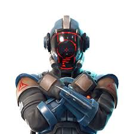
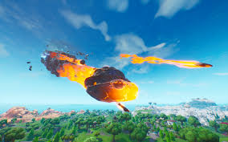
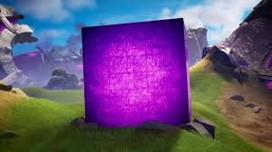
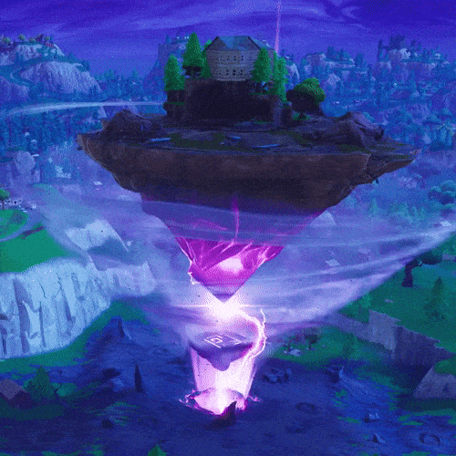
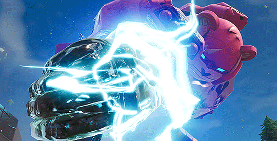

Early Fortnite Lore
Table of Contents
Fortnite was released in 2017, at first nobody expected it to become one of the biggest and impactful stories in gaming. Chapter 1 introduced the island, the mysterious Zero Point, and the forces that would shape the future of the game. From meteors and the travis scott evemt, Fortnite set the foundation for becoming the number one game in the world. Below is a summary of the key events that defined this chapter.
Chapter 1: Start
Season 1-2 - The Island and The Visitor Arrival:
- Story was minimal at first
- Objects like the Durr Burger, meteor fragments, and other anomalous items appeared
- Early hints of the "loop"
- The first major piece of lore revealed was about the approaching meteor
Season 3-4 - The Meteor and The Visitor:
- A giant meteor was placed on the map (players could land there and loot chests)
- During Season 4 the meteor crashed into Dusty Depot (renamed Dusty Divot)
- Inside the meteor was "The Visitor," a member of The Seven
- He built a rocket which created the Zero Point rift
Season 5 - Rifts and Reality Breaks:
- The rocket’s tear opened rifts bringing objects from other dimensions
- New POIs: Viking Village and Paradise Palms
- The Zero Point began destabilizing
Season 6 - The Cube ("Kevin")
- A lightning strike formed Kevin the Cube
- Kevin traveled the map leaving runes
- The cube melted into Loot Lake turning it bouncy
- The lake rose into the sky becoming the Floating Island
Season 7 - The Ice King Arrives
- An iceberg collided with the island
- A snow castle POI appeared
- The Ice King blanketed the island in snow
- The Prisoner escaped captivity
Season 8 - Fire vs. Ice
- The Prisoner unleashed volcanic activity
- The Volcano destroyed Tilted Towers & Retail Row
- The Zero Point grew stronger
Season 9 - Neo Tilted & the Monster
- A giant creature awakened under Polar Peak
- The Mecha Team Leader was built to stop it
- The robot won but exposed the Zero Point
- The Zero Point became unstable
Season 10 (X) - Reality Collapsing
- The Zero Point distorted reality
- Old locations returned altered
- The Seven attempted to stabilize reality
- The Zero Point exploded, creating the black hole
The End of Chapter 1
- The Black Hole event erased the island
- Players saw nothing for two days
- Chapter 2 began with a new island
Chapter 2: A New Chapter
Chapter 2: A New Island
- A brand-new island appears after the Black Hole.
- The Zero Point is hidden underwater.
Season 2 – GHOST vs SHADOW
- Two spy factions battle for control.
- Midas builds the Doomsday Device.
- The Device event floods the island.
Season 3 – Flooded Map
- The island becomes mostly water.
- The Zero Point starts reacting again.
Season 4 – Nexus War
- Marvel heroes arrive due to the unstable Zero Point.
- Galactus absorbs the Zero Point but is defeated.
Season 5 – Hunters and Portals
- The exposed Zero Point cracks open.
- Agent Jones recruits characters from other realities.
Season 6 – Primal
- The Foundation seals the Zero Point in a crystalline spire.
- The island becomes wild and primal.
Season 7 – Alien Invasion
- Aliens abduct POIs.
- Dr. Slone leads an IO mission to stop them.
Season 8 – The Cube Queen
- Cubes spread corruption across the map.
- The Cube Queen attempts to destroy reality.
- The Foundation returns and saves Jonesy.
End of Chapter 2
- The Cube Queen flips the entire island.
- This reveals the Chapter 3 island underneath.
Images/gifs:

Season 1 Logo
The Visitor
The Meteor
Kevin the Cube
The Floating Island
Mecha Team Leader Event

Black Hole Event